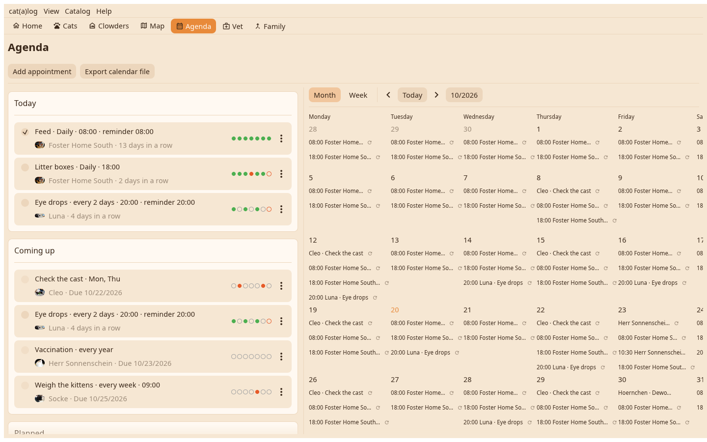

The list on the left, a calendar on the right: a month of cells or a week of hour columns, opened at now. The list goes on showing everything planned whatever the calendar shows.

Daily, every so many days, on weekdays or one time with a due date; a time and a reminder that speaks with the cat's voice as a desktop notification. The box ticks, the streak and the week dots follow, a chore is duplicated onto another cat from its editor.
The plus adds an appointment, a reminder or a chore. A vet run with several cats is one card; Finish asks which were treated. The ICS button writes a calendar file for your desktop calendar.